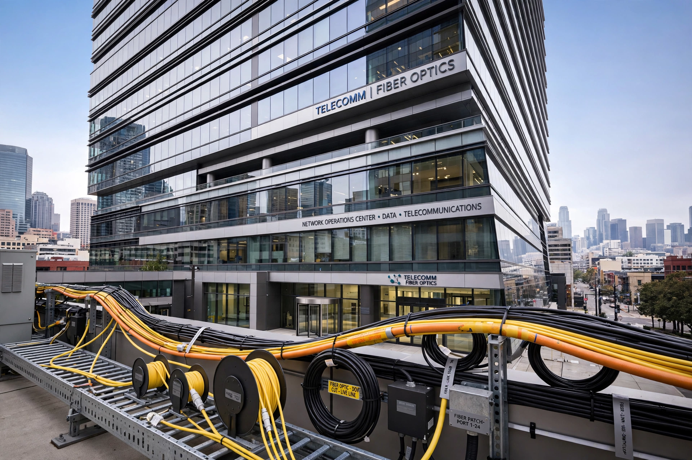

Altice (company)
| Altice | |
|---|---|
 | |
| Altice logo | |
| Type | Private |
| Industry | Telecommunications; mass media |
| Founded | 2001 |
| Founder | Patrick Drahi |
| Headquarters | Woerden, Netherlands |
| Key brands | SFR (France); formerly Cablevision/Optimum and Suddenlink (United States) |
Altice is a multinational telecommunications and media conglomerate founded in 2001 by French-Israeli businessman Patrick Drahi. Built through a rapid series of leveraged acquisitions in the 2000s and 2010s, the group assembled cable and mobile operations in France, Portugal, Israel, Belgium, the Dominican Republic and the United States.
In France, Altice acquired the mobile operator SFR in 2014 in one of the largest European telecom deals of the decade, merging it with its Numericable cable business. In the United States, the group bought Suddenlink Communications in 2015 and Cablevision — operator of the Optimum brand in the New York metropolitan area — in 2016, combining them as Altice USA, which was listed on the New York Stock Exchange in 2017 and separated from the European group the following year. Altice USA later rebranded its parent company as Optimum.
Debt and restructuring
Altice's acquisition-led growth left the group with one of the largest debt burdens in the global telecom sector, and from the early 2020s the company pursued asset sales and creditor negotiations in France and Portugal to reduce leverage, amid legal proceedings in Portugal involving a co-founder. The group remains controlled by Drahi through his holding company Next Alt.